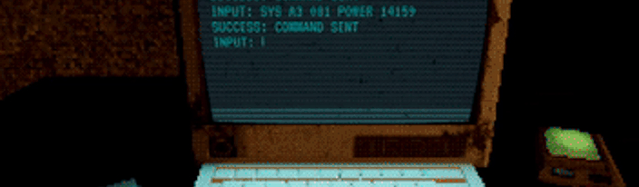
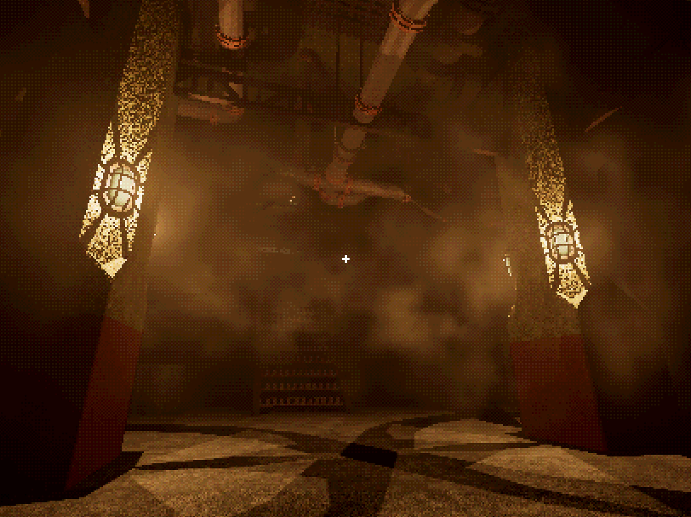

Unreal Engine Five - C++ Development - Key Features
I recently released a game on Itch.io, developed with a friend in Unreal Engine using C++.
This involved the design, development and iteration of numerous game mechanics, made for ease of use by game/level designers within the editor.
Some key features of my UE5 development:
- Mechanic - 3D Interaction System
- Mechanic - Computer Terminal System
- Mechanic - AI - Environment Reactivity
- Utility - Level Design Tools
- Rendering - Dynamic Colour Quantisation and Dithering
These are the key features of my work in Unreal Engine 5, written in C++.
Mechanic - 3D Interaction System:
The interaction system enables a player to interact with and manipulate their environment using both their cursor and crosshair.
This considers player input relative to objects in 3D space, making for more immersive handling of doors, valves and more.
Interaction is built around a family of components containing all interaction logic, for simple use by non-coders in the editor.
These building blocks can be used for anything from interactive doors and books to buttons and machinery.
The system also supports axel-based rotation for objects such as valves.
This is achieved by generating a vector tangential to the valve from the holding point, to tell if force is clockwise or anticlockwise.
Mechanic - Computer Terminal System:
The player is given an interactive 3D terminal to affect their environment, controlled through their own key inputs or an interactive keyboard in-game.
It processes commands to read disks and manipulate the environment, such as controlling lights and mechanical doors.
The terminal uses direction keys to traverse through the current line or recall previous commands.
To explain functions, an interactive manual with moving 3D pages was created, using the interaction system.
Click here for a technical overview
Mechanic - AI - Environment Reactivity:
Much work went into allowing an enemy to meaningfully interact with the environment, posing numerous challenges of how it should interact with objects designed for the player interaction system.
Navlinks and navmesh modifiers let AI navigate around and interact with obstacles like doors and barriers immersively.
Environmental queries improve AI behaviour, such as identifying blind spots to search when an enemy is alerted.
Click here for a technical overview
Utility - Level Design Tools:
As I worked on making a game level, I made utilities to streamline work like adjusting stair meshes or setting up particle effects.
Fog area of effect could be viewed and set through volumes in the editor. Particle parameters could also be set quickly in the editor.
Stair meshes were time consuming to adjust, so I made a tool to generate stairs using instanced meshes and user parameters.

Click here for a technical overview
Rendering - Dynamic Colour Quantisation and Dithering:
I wanted to emulate older, dithered visuals whilst being able to dynamically increase the quality of objects or surfaces.
A combination of downsampling, colour quantisation and dithering are used for this.
The custom stencil informs the shaders downsampling and quantisation for objects like selected interactables to become "in-focus" visually.
This allows surfaces like book pages or a text-based terminal screen to remain legible whilst still matching surroundings through a less constrained quantisation.